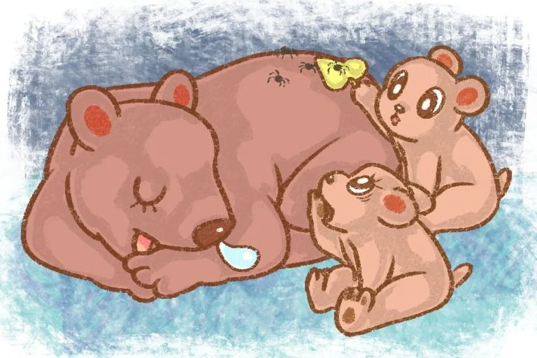
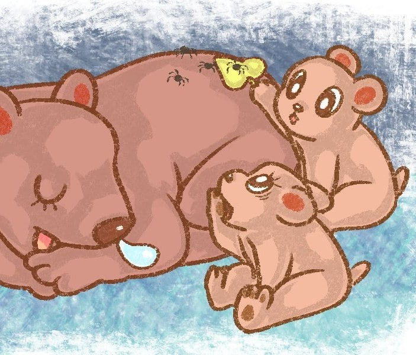

Two little bears try to wake their mother at the end of winter; an elephant and a lion have a battle of wills; five rats try to sneak past a sleeping cat; and a brave kitten gets lost.Your kids will love these short, 5-minute funny stories about animals. If you’d like to download a printable copy, sign up for the Free Activity Pack below.
Wake Up Mum Written by Christina Wither and Illustrated by Dannaria.Two bears trying to wake their mother
Two little bears peeped out of their cave. Winter was over and they could smell the fresh spring air. It was time to get up and play after their long sleep.“Let’s run under the trees,” said Ben.“I want to roll in the grass,” said Bessie.“We’d better ask mum,” said the bears together.Ben and Bessie went into the cave where they had slept with their mum. There she was in the far corner. Mother Bear was still fast asleep.
The two little bears tiptoed over to their mum and shook her gently.
“Wake up mum. The snow has melted and it is time to play,” said Ben.
Mother bear did not even move. She grunted and rolled over to carry on sleeping.
“What can we do?” asked Bessie.
“We need our mother to wake up and take us into the forest to have some fun.”The two little bears sat outside the cave and tried to think of a way to wake up their mum.“I know, let’s get some tickly spiders and see if they will wake up our mother,” said Ben.
The two bears went to find some tickly spiders. Bessie was feeling a bit scared of the spiders but Ben collected them on a big leaf. He took them to where his mum was lying.The spiders walked off the leaf and across Mother Bear’s back. Mother Bear giggled in her sleep, but she did not wake up.Bears trying to wake up their mother“I think we should ask a noisy cuckoo,” said Bessie.The bears went out to the trees near the cave. Sitting in the tree was a cuckoo.“Cuckoo, cuckoo, cuckoo,” sang the bird.The two bears asked the cuckoo to follow them back to the cave and call out to their mom.“Cuckoo, cuckoo, cuckoo,” sang the bird but mom just rolled over and carried on sleeping.The two little bears did not know what to do. They had tried tickling, making a loud noise and calling out to mum.“I know,” said Ben. “What about something she likes to eat?” “Honey!” said the bears together.Off they ran to a beehive. They talked politely to the bees and the bees gave them some honey. They ran back to the cave and tiptoed in to see if their mum would smell the honey.Mum’s big brown bear nose began to twitch. Then her nose began to wiggle and she opened one eye. The baby bears took a few steps backwards.Mother Bear opened both her eyes and blinked. The baby bears took a few more steps back. Now they were up at the opening of the cave. Mother Bear sat up and gave a big sniff.“I smell honey,” she said.Mother Bear was awake at last. Ben and Bessie were so happy.The little bears took a few more steps out of the cave and happily Mother Bear followed them. At last, they had found the best way to wake up mum!Three happy bears skipped into the forest to enjoy the spring and have fun together.
It was a hot, sunny day in Africa. Elephant was walking down the path on his way to his favourite water hole. He was looking forward to the cool water and a mud bath. Lion was also walking along the path. Lion was on his way to the grassy plains. He was going to lie down and wait for his lunch. Elephant turned the corner and lifted his trunk in the air. He smelt the water at the water hole. Lion turned into the same corner. He was getting closer to his favourite hunting spot. Suddenly the two animals met in the middle of the path. “Out of my way,” roared the lion. “Out of my way,” trumpeted the elephant. “Make way for the king of the jungle,” growled the lion. “Certainly not! Where shall I go?” answered the elephant. The path was blocked. The two strong animals stood facing each other. The elephant would not move. The lion would not move. Other animals began to walk along the path. Some were standing behind the elephant and others behind the lion. Lion and elephant just stared at each other and refused to move. Lion and elephant, face to face A monkey came running past. He greeted the other animals. Then he reached the lion and the elephant. He looked at the fierce lion. He looked at the enormous elephant. The monkey started to chuckle. He ran off into the jungle to get some ‘monkey vine’ that hung from the trees. He rushed back to the lion and the elephant. “I know how to solve your problem,” said the monkey. All the animals behind the elephant and the lion wanted to get a look at what was going on. They saw the monkey arrive with a long piece of monkey vine. He tied one end around the elephant and the other around the lion. He stood on an anthill nearby and shouted! I consent to receiving emails and personalized ads. “Friends, we are going to have a tug of war. When I say ‘heave’ then it is time for the lion and the elephant to pull the monkey vine!” “May the best animal win,” shouted the monkey. Elephant was very strong and pulled hard at the rope. Lion dug his extra sharp claws into the path and pulled hard too. Suddenly there was a clap of thunder! The animals looked up into the sky. They saw huge dark rain clouds. A storm was on its way. Then Lion felt the first drops of rain. He let go of the monkey vine and ran off into the bushes. “My mane, my beautiful mane. I combed it as smooth as silk this morning!” he cried. Lion ran to hide under an Acacia Tortillas, the umbrella thorn tree. “I win,” cried Elephant, as he stood in the rain. Elephant’s thick skin was like a raincoat. He was not worried about getting wet. Monkey hopped about with delight. He wanted Elephant to win. Suddenly all the animals heard a mighty roar! “No! The rain stopped play; there is no contest.” Lion did not want the animals to think he had lost. No contest meant there was no winner. Elephant nodded his head and walked down the path. He did not care if he got wet and he was looking forward to getting muddy too. In July 2020, Jeon sold his company, Treasure Studio, to Moonbug, which had been founded just two years earlier. Moonbug expanded the show to more audiences, inking deals with platforms in South Korea, China, and Europe. The company’s other big acquisitions include Little Baby Bum, a YouTube channel created by a British couple that revolves around nursery rhymes, and Blippi, a live-action YouTube show. The company is perpetually searching for the next sensation. In February, Moonbug acquired Little Angel, a network of YouTube channels featuring 3-D cartoons about a toddler named Baby John, who sings alongside his family as colorful subtitles play along the bottom of the screen.For a company with this formula, CoComelon was a “once-in-a-generation opportunity,” Andy Yeatman, a Netflix alum who is the managing director of Moonbug, tells me. The show is deceptively simple. Each episode is a self-contained song that lasts two to three minutes. Some of them are nursery rhymes like “Wheels on the Bus”; others are original earworms about the moments that make up a toddler’s life. The songs star JJ and his two siblings, older brother TomTom and older sister YoYo; their mom and dad; and JJ’s friends. There’s a lot of repetition and an inordinate amount of disembodied toddler giggles. Some of the lyrics feel as if they were written by a computer that doesn’t quite get rhyming. (A sample: “Good, good, carrots are good for you/ Yay, yay, yay, I love them, ooh.”) But there are little touches, experts say, that make the show appealing to younger kids in particular. The world depicted on CoComelon has bright colors and no sharp edges or corners. It is shot from a low perspective, so the viewer sees the world from a toddler’s level. The characters are unfailingly kind to one another; there is no conflict on CoComelon. And the topics are universal: viewers see JJ perform familiar tasks, like potty training and putting on shoes, and struggle with familiar challenges, like learning to share and getting sick. The show takes “every meaningful moment” in a toddler’s life and makes a song around it, says Patrick Reese, general manager of Moonbug.